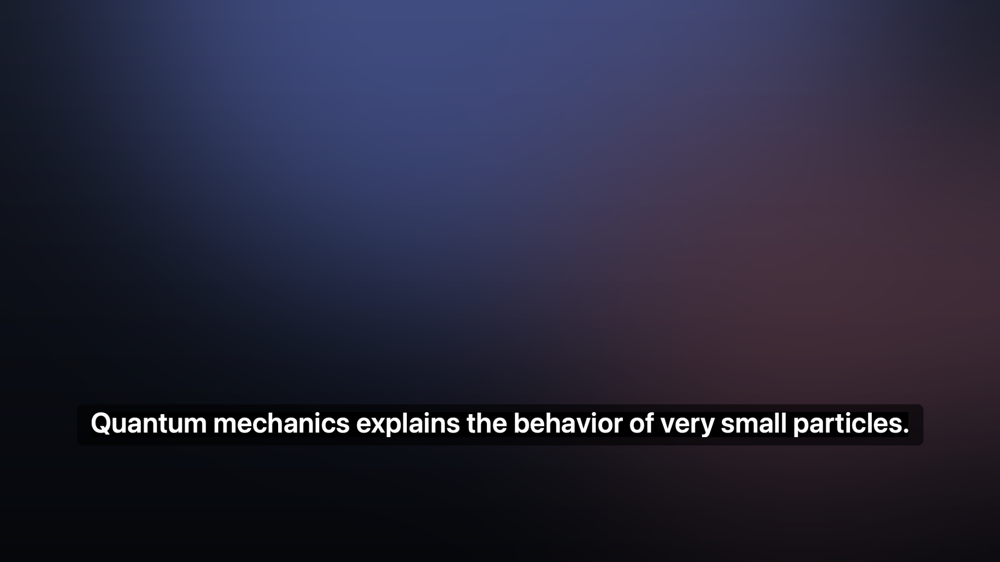

Subtitles for anything
playing on your Mac.
Real-time English subtitles over any video, call or file — recognised entirely on this machine, on the Neural Engine. No account, no subscription, no audio ever uploaded.

Built to be fast enough to follow
Measured on an M3 by playing a known sentence and timestamping the app's own output.
| Engine | Params | First word | Punctuation |
|---|---|---|---|
| Parakeet EOU @160 ms | 120M | 0.63 s | no |
| Parakeet Unified @320 ms (default) | 0.6B | 0.86 s | yes |
| Nemotron @560 ms | 0.6B | 1.50 s | yes |
The default costs about 0.2 s more than the fastest tier and buys correct words, real punctuation and capitalisation. Pick the fastest one if you would rather have the lowest possible delay.
What it does
A menu-bar app. Nothing else to run, nothing to configure before it works.
Captures system audio
Not the microphone. Whatever the Mac is playing is what gets transcribed — headphones, speakers, any app.
On the Neural Engine
Streaming recognition runs on Apple silicon's ANE, so the CPU stays free and the fans stay quiet.
Never steals a click
The overlay is click-through and cannot take focus. It sits over full-screen video without interrupting it.
Global shortcuts
Start, pause and stop from any app. Pause keeps the model warm; stop releases the memory.
Export the transcript
The whole session can be saved as .srt with timings that line up with playback.
Nothing leaves the Mac
No account, no analytics, no audio uploaded. The only network use is the one-time model download.
Install
Download the zip, move the app to Applications, and grant one permission.
- Download and drag it across
Open the disk image and drop
Live Subtitlesonto the Applications shortcut. (A.zipis on the release page too, if you prefer.) - Allow screen recording macOS asks on first launch, because that is how system audio is read. Grant it in System Settings → Privacy & Security → Screen Recording.
- Start watching Subtitles appear near the bottom of the screen. The first run also downloads and compiles the speech model (40–90 seconds, once).
Prefer building it?
git clone, then make install. You need the Xcode command line tools.
See the README.
Questions
Is my audio uploaded anywhere?
No. Recognition runs entirely on your Mac. The app makes exactly one kind of network request: downloading the speech model the first time, and — if you leave the update check on — a once-a-day request to GitHub for the latest version. No audio, and nothing about you, is sent.
Why is it English only?
The streaming models used here are English. That is the honest current limit, and it is the first thing on the list to change.
Does it work with Netflix, YouTube, VLC, Zoom?
Yes — anything that plays audio through the system. The app does not touch the player at all, it only listens to the output.
Why does macOS warn about an unidentified developer?
If a release was built without a notarisation certificate it is unsigned for distribution. Right-click the app and choose Open the first time, or build it yourself from source.
What does it cost?
Nothing. MIT licensed, no account, no paid tier. If it is useful, a star on GitHub helps.